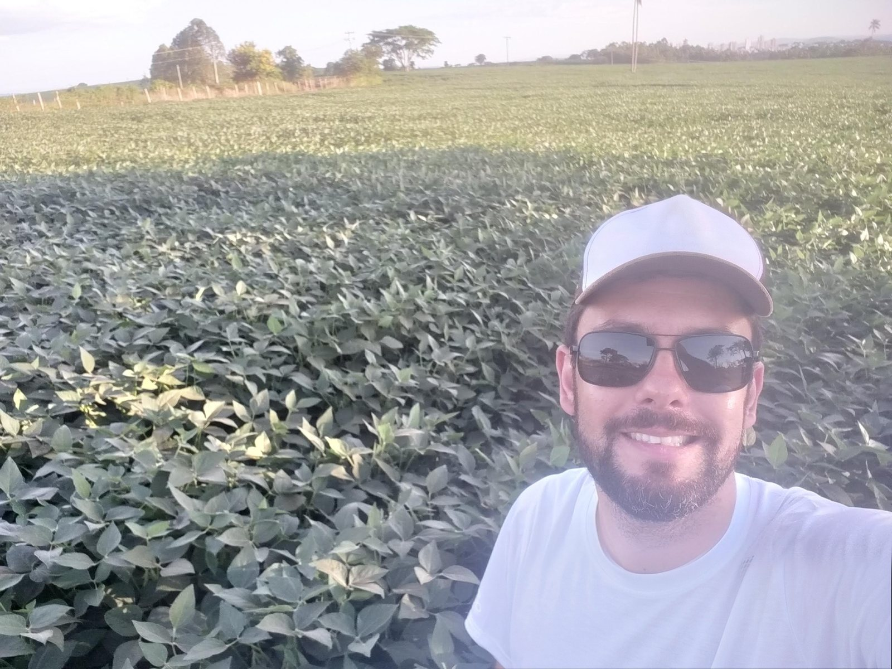
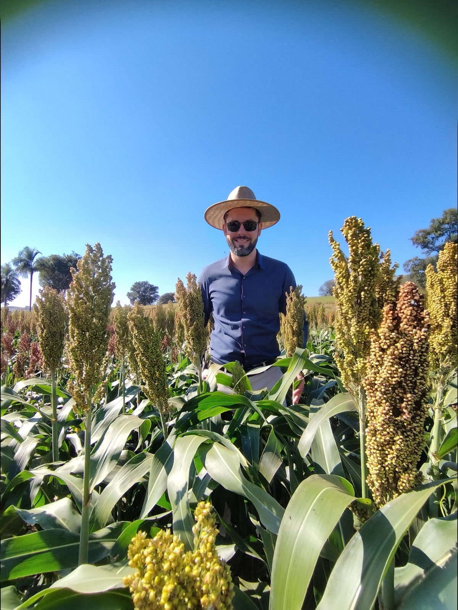
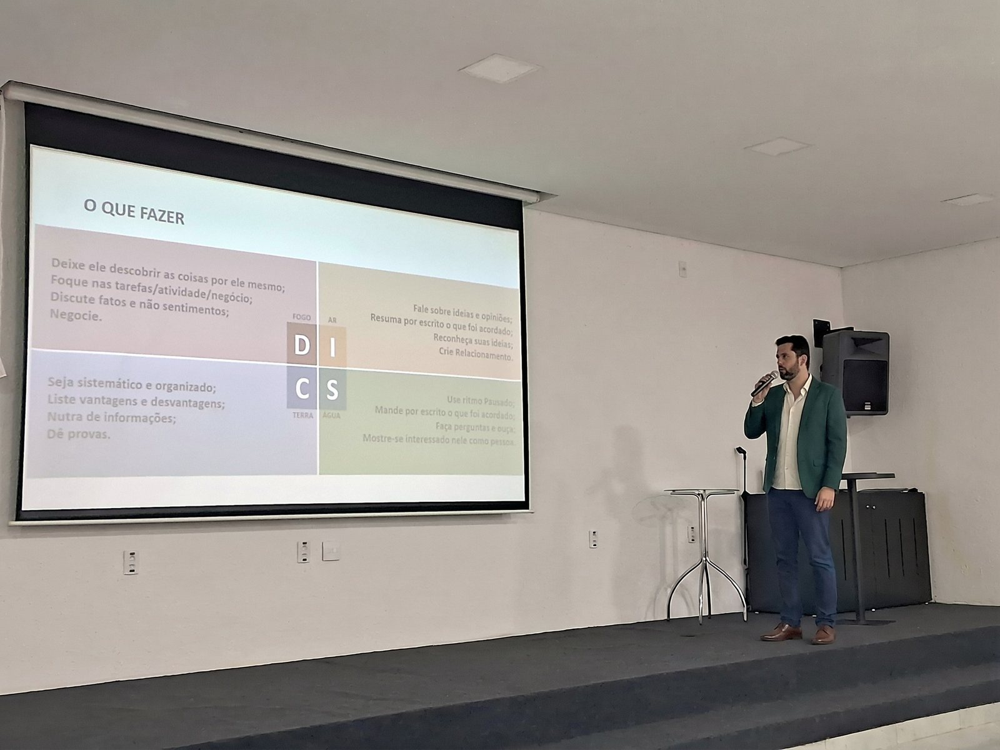

Organização, velocidade e conhecimento nas áreas de negócio
Estruturamos as áreas Comercial, Originação, Compras, Logística, Crédito e Marketing e as pessoas que as conduzem, sempre integradas ao back-office: Tributário, Financeiro, Controladoria, Jurídico e Recursos Humanos.

Pilar 1Reestruturação de áreas de negócio
Para a empresa que travou: vendas fracas, margem que some no caminho, Comercial que não conversa com Crédito e Logística.
- Diagnóstico em campo para achar a causa real, que muitas vezes não está no preço
- Revisão de compras, formação de preço e margem
- Crédito integrado ao Comercial para vender e receber
- Rotinas e indicadores que ligam as áreas

Pilar 2Planos de expansão
Para a empresa que quer crescer: nova praça, nova unidade ou novo produto.
- Estudo de mercado com praças, clientes e fornecedores mapeados
- Plano com metas, orçamento e etapas
- Time Comercial e de Originação nas unidades novas com gestor próprio
- Originação com armazéns parceiros e vendas que transformam crédito de ICMS em caixa

Pilar 3Mentoria e desenvolvimento de líderes
Para a empresa que depende de uma pessoa só ou que está passando por sucessão ou troca de gestão.
- Formação do líder interno que vai tocar a área
- Preparação de sucessores
- DISC aplicado ao time
- Acompanhamento até a área andar sozinha
Onde a consultoria entra
Comercial
- Carteira, praças e potencial de mercado
- Estrutura, metas e rotina do time de Vendas
- Política comercial, preço e margem
- Crédito ao cliente integrado à venda
- Novos clientes, canais e convênios
Compras e Originação
- Onde e quando comprar: praças e momento
- Fornecedores e originação no campo
- Contratos a preço fixo, frame e futuros
- Gestão de risco e hedge
- Armazéns parceiros sem investir em armazenagem
Logística
- Rotas, modais e transportadoras parceiras
- Frete competitivo e custo por rota
- Vendas CIF e FOB, mercado interno e porto
- Recepção, armazenagem e expedição
- Rotas que transformam crédito de ICMS em caixa
Crédito
- Política de crédito e limites por cliente
- Análise de risco e garantias no Agro
- Cobrança e recuperação de recebíveis
- Crédito integrado à venda e à logística
- Convênios que transferem o risco do cliente
Marketing
- Posicionamento, portfólio e preço
- Lançamento de produtos e novos mercados
- Materiais e argumentos para a força de vendas
- Feiras, eventos e relacionamento com o produtor
- Inteligência de mercado e concorrência
Frases que ouvimos de donos de empresa
O negócio travou
- "O estoque está alto e o time diz que o problema é preço."
- "Eu vendo, mas a margem some no caminho."
- "A gente sempre compra na alta."
- "O Comercial não conversa com o Crédito nem com a Logística."
- "O Comercial vende, mas a empresa não recebe."
- "Tudo depende de mim."
Diagnóstico em campo para achar a causa real. Revisão da metodologia de compras com leitura de mercado e gestão de risco para não comprar na alta. Formação de preço e projeção de margem. Crédito integrado ao Comercial para vender e receber. Rotinas e indicadores que ligam Comercial, Crédito e Logística. Um responsável interno formado.
A empresa quer crescer
- "Quero abrir uma área nova e não sei por onde começar."
- "Arrendei unidades e não tenho time Comercial lá."
- "Quero crescer em grãos sem investir em armazém."
- "Tenho crédito de ICMS parado."
- "Preciso formar quem vai tocar a área."
Estudo de mercado da nova área ou região e plano de expansão com metas, orçamento e etapas. Time Comercial e de Originação nas unidades novas com gestor próprio. Originação com armazéns parceiros sem investir em armazém. Vendas interestaduais planejadas para transformar crédito de ICMS em caixa. Formação do líder que vai tocar a área.
Quer saber mais sobre a nossa consultoria?
Conversar pelo WhatsApp